Manaslu Circuit
Circle the world's eighth-highest peak through hidden Tibetan Nepal.
177 km through Nepal, ending at Dharapani. You begin at Machha Khola. Watch Walks moves you along it with the steps you already take, so it's about 7 weeks at 5,000 steps a day. Here are its 18 landmarks, in the order you meet them, photographed and written up.
- 177km end to end
- 18landmarks
- 7 weeksat 5,000 steps a day
- Dharapanifinishes at

The landmarks of Manaslu Circuit
18 landmarks, in walking order. Each photograph is by the person credited beneath it, used as they licensed it.
-
Machha Khola
Machha Khola means 'fish river', and the Budhi Gandaki runs milky-grey below the last road-head. Porters lash loads by the tea-house steps, where the first of several restricted-area permits is checked. Few trekkers gather here — only the river's roar and a footpath climbing north toward a mountain still hidden behind the ridges.
-
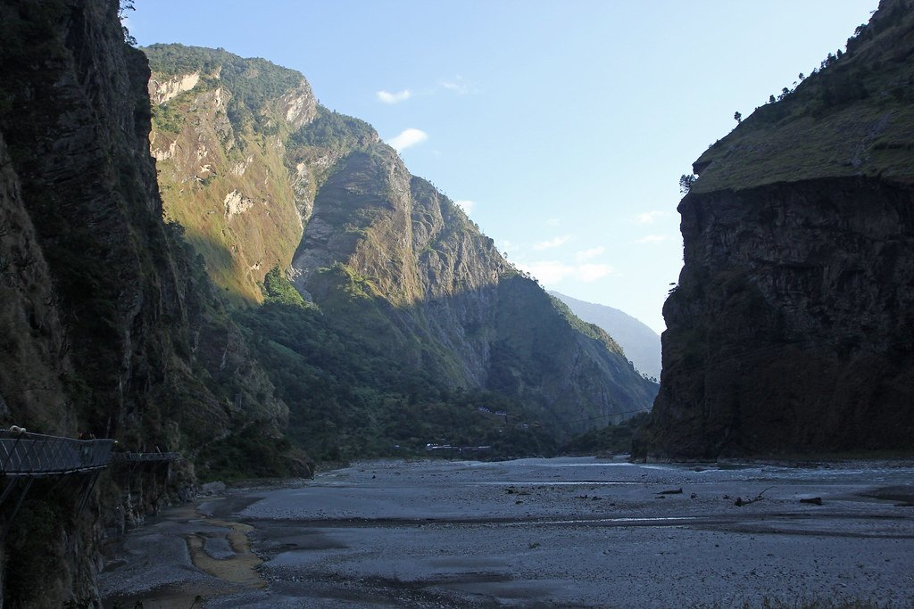
Photo: Jay Ramji's Travels · Flickr via Openverse, CC BY-SA 2.0 Budhi Gandaki Gorge
Sheer rock closes overhead where the path clings to the gorge, suspension bridges swinging above white water. At Tatopani, 'hot water' in Nepali, a hot spring seeps from the cliff, a rare warm halt on the trail. The Budhi Gandaki has carved this cleft over millennia, and the route runs along its floor like a crack in the world.
-
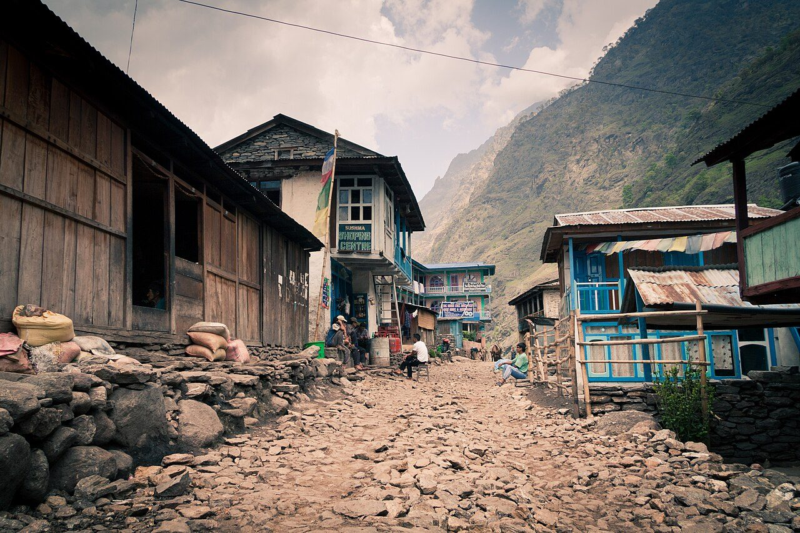
Photo: Dmottl · Wikimedia Commons, CC BY-SA 3.0 Jagat
Flagstones ring underfoot at Jagat, a tidy village where a checkpoint logs every name. Beyond here lies the restricted Manaslu Conservation Area, closed to anyone without a licensed guide and a special permit. An officer stamps papers beneath a fluttering line of prayer flags, and the trail climbs on, now inside the mountain's guarded threshold.
-
Philim
Maize and millet terraces step down toward the river at Philim, a Gurung settlement strung along the slope. Children in uniform wave from a whitewashed schoolhouse funded by trekkers' fees. The Tsum valley branches east here toward the Tibetan border, while the main trail holds north, following the Budhi Gandaki deeper into ever-narrowing walls.
-
Deng
By Deng the air has changed. This tiny cluster of stone houses near 1,800 metres is the first village where Tibetan Buddhism openly shapes daily life, with mani walls, chortens and barley flour in place of rice. A trembling bridge carries the trail to the river's far bank, where the trek tilts from Nepali foothills toward the high Himalaya.
-
Ghap
Carved mani stones line the way into Ghap, each slab chiselled with 'Om mani padme hum' and worn smooth by centuries of passing hands. Custom holds that they are passed on the left, always clockwise. Pine and rhododendron forest cloaks the valley now, and somewhere ahead, hidden behind the ridgelines, stands the eighth-highest mountain on earth.
-
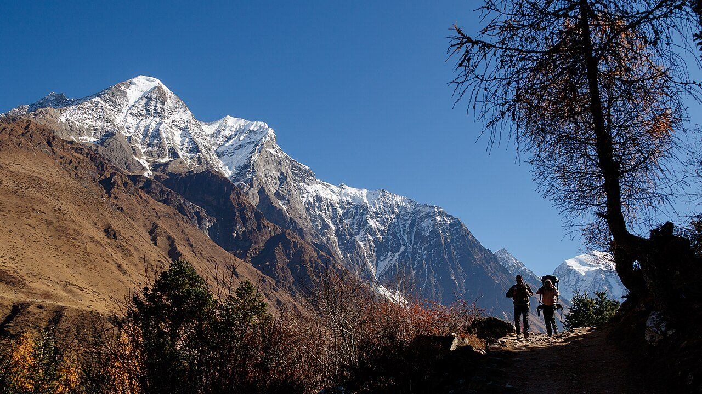
Photo: Nrik kiran · Wikimedia Commons, CC BY-SA 4.0 Namrung
A wooden kani-gate frames the entrance to Namrung at 2,630 metres, where another checkpoint tallies permits. The valley suddenly opens into apple orchards, timbered Tibetan houses and a first jagged glimpse of white peaks tearing the sky ahead. The Nubri people who farm these terraces trace their roots straight across the border to Tibet.
-
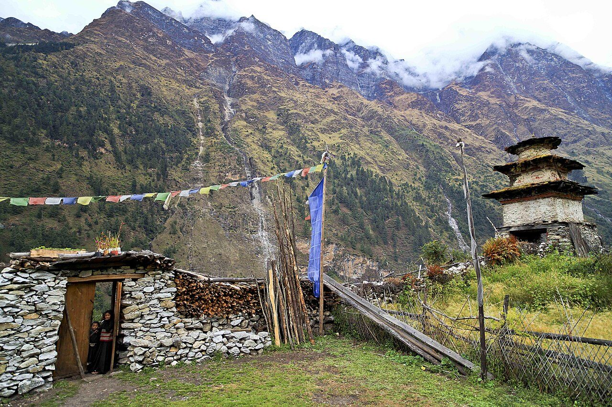
Photo: David Wilkinson from Seattle, Washington, U.S.A. · Wikimedia Commons, CC BY 2.0 Lho
Lho, near 3,180 metres, delivers the reveal of the whole valley: Manaslu, 8,163 metres, standing square at its head, the twin summits blazing in the evening light. The red-walled Ribung Gompa perches above the village, and the drone of monks' horns drifts across the rooftops at dusk. The great peak dominates every view from the cold streets.
-
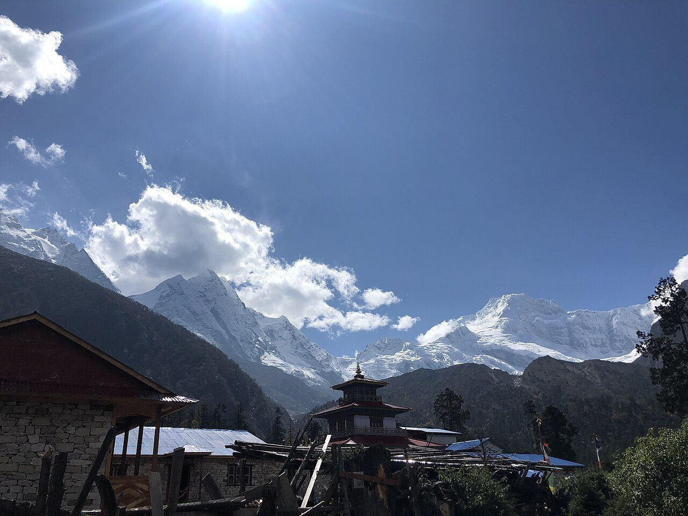
Photo: Aashutoshdf5 · Wikimedia Commons, CC BY-SA 4.0 Shyala
Shyala sits in a bowl ringed by giants, with Manaslu, Ngadi Chuli, Himalchuli and Naike Peak forming a full amphitheatre of ice around a scatter of lodges. Frost furs the grass each morning. At close to 3,500 metres the peaks no longer read as scenery but as the walls of a room, hemming the village on every side.
-
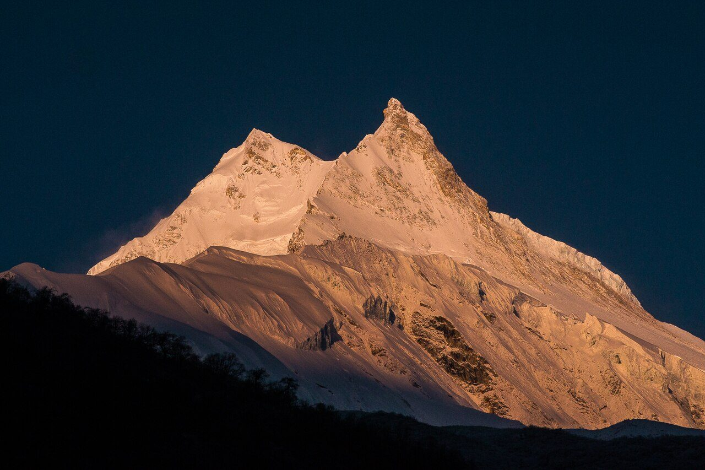
Photo: Samdesherpa · Wikimedia Commons, CC BY-SA 4.0 Samagaon
Spread across a broad glacial flat at roughly 3,530 metres, Samagaon is the largest village of the upper Nubri and the place to rest and acclimatise. Yaks graze between flat-roofed stone homes, and the Pungyen Gompa broods on the slope toward Manaslu's flank. Most trekkers stay two nights here, letting the thin air turn bearable before the pass.
-
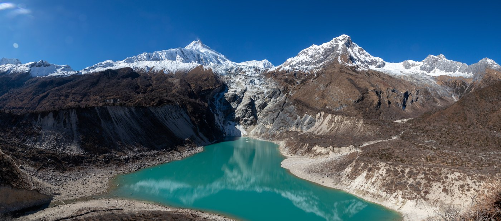
Photo: Sangyam adventurer · Wikimedia via Openverse, CC BY-SA 4.0 Birendra Lake & Manaslu Base Camp
A side trail climbs from Samagaon to Birendra Tal, a glacial lake the milk-blue of powdered turquoise, cradled below Manaslu's tumbling ice. Higher still, the route reaches Base Camp near 4,800 metres, from where the 1956 Japanese expedition first plotted its way to the summit. The great peak looms closer here than from anywhere else on the circuit.
-
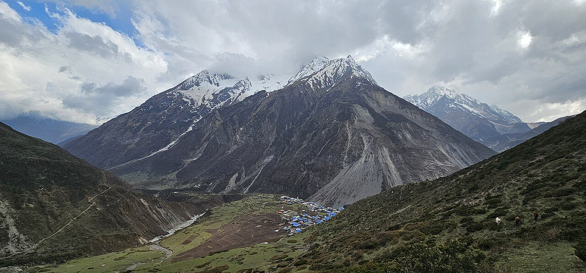
Photo: Nabin K. Sapkota · Wikimedia Commons, CC BY-SA 4.0 Samdo
Samdo is the last permanent village, a Tibetan settlement at about 3,875 metres, hard against a border still crossed by traders and their yak trains. Winter smoke leaks from stone chimneys while children herd dzo across frozen fields. Beyond here little lives but marmots and snowcocks, and the Larkya pass looms barely a day away.
-
Dharamsala (Larkya Phedi)
There is no real village at Dharamsala, only a huddle of cold stone huts at 4,460 metres, also called Larkya Phedi, the 'foot of the pass'. It is a place to eat early and sleep badly before a start long before dawn. Head-torches bob out into the dark by four in the morning, the thin air biting as the high crossing waits above the moraine.
-
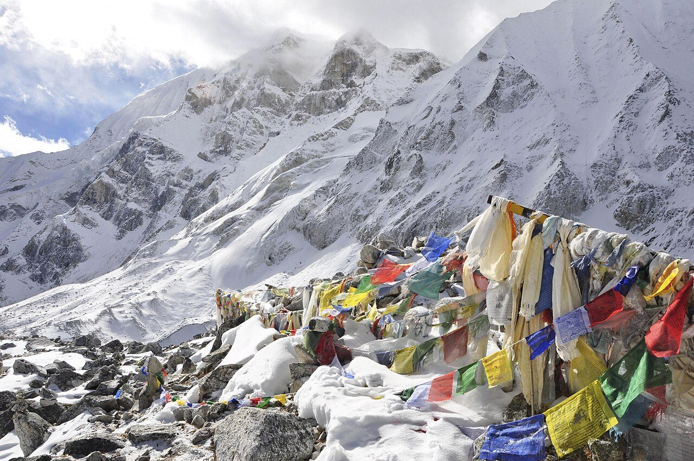
Photo: David Wilkinson from Seattle, Washington, U.S.A. · Wikimedia Commons, CC BY 2.0 Larkya La
The Larkya La tops out at 5,106 metres, the highest step of the whole circuit and one of the longest pass-crossings in the Himalaya. Prayer flags scream sideways in the wind while Himlung, Cheo and Kang Guru ring the horizon in raw white. This frozen saddle is the spine of the range; from here, every step leads down.
-
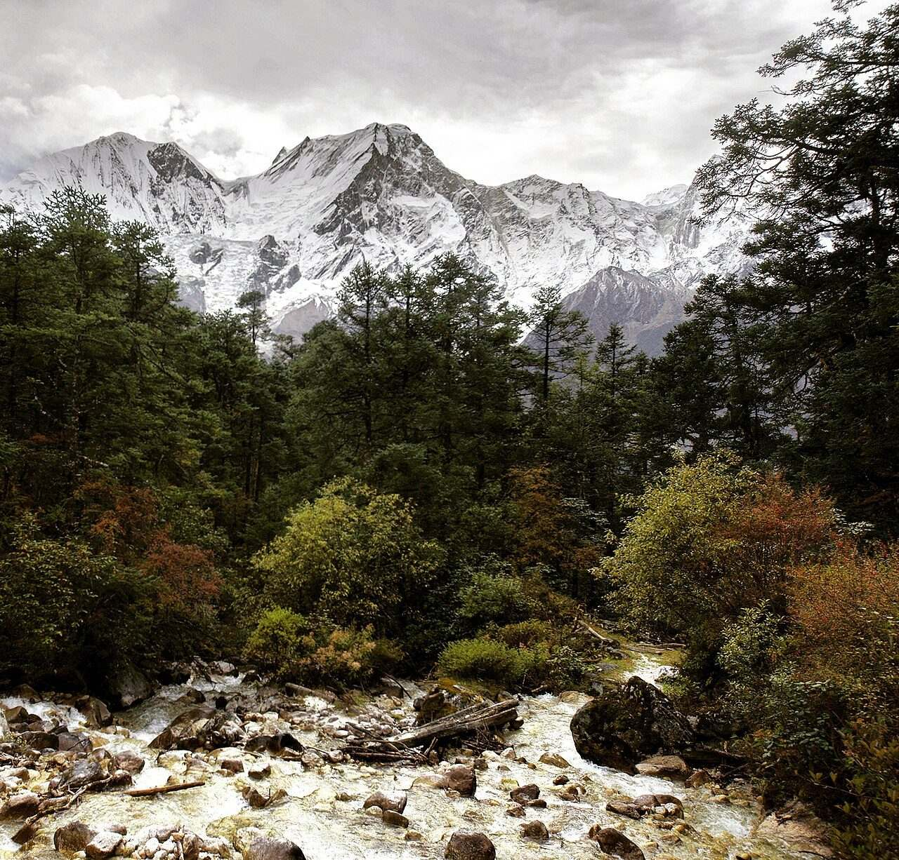
Photo: Mohan K. Duwal · Wikimedia Commons, CC BY-SA 4.0 Bimthang
The knee-punishing descent finally spills onto the meadows of Bimthang, near 3,590 metres, where the Ponkar glacier calves into a pale lake and Manaslu shows its unfamiliar western face. Horses graze the flats and a few lodges send up woodsmoke. Warmth and oxygen return together, and the pass already feels half-dreamed.
-
Gho
Pine forest returns at Gho, a small Gurung village where the trail rejoins a world of terraced fields and running taps. Waterfalls thread the green hillsides, and the air runs soft and thick again after days at altitude. Muleteers haul supplies up-valley through the lodges, and dal bhat tastes better here than anywhere higher on the trek.
-
Tilije
Tilije is a prosperous village of apple brandy and slate roofs, close enough to Annapurna that the two treks almost touch. A stone-arch gate and a small monastery mark its edge. The Dudh Khola is crossed on a long bridge onto easy ground, where the raw wilderness slips behind and solitude gives way to company.
-
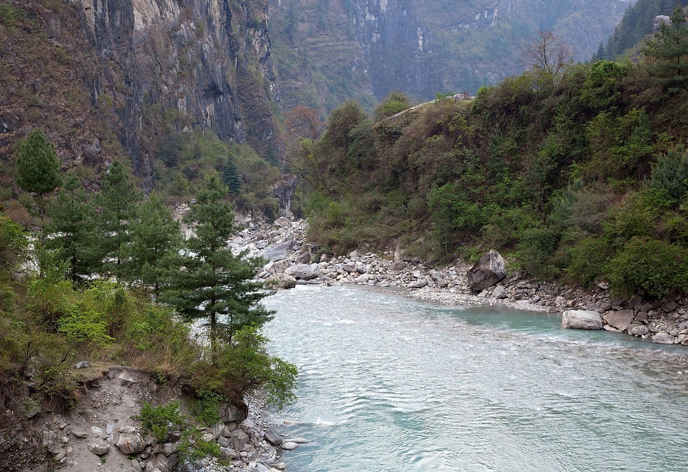
Photo: Sergey Ashmarin · Wikimedia Commons, CC BY-SA 3.0 Dharapani
Dharapani is where the lonely Manaslu circuit dissolves into the crowd. Past the checkpoint the trail meets the Annapurna Circuit head-on — dozens of trekkers, jeeps grinding the road, wifi and cold beer, like surfacing from deep water. Behind it all Manaslu keeps its silence: the eighth-highest mountain on earth, walked the whole way around and seen by almost no one.
Walking the Manaslu Circuit
Your watch is already counting these steps. Watch Walks spends them on the Manaslu Circuit, all 177 km of it, and hands you each landmark as you reach it. There's no route recording, no account and no ads. The Inca Trail is free; this one is a one-time purchase with no subscription.
Other trails in Asia
- Shikoku Pilgrimage 1,200 km · Japan
- Annapurna Circuit 128 km · Nepal
- Jordan Trail 675 km · Jordan
- Lycian Way 540 km · Turkey
- Nakasendo Way 530 km · Japan
- Kumano Kodo 46 km · Japan